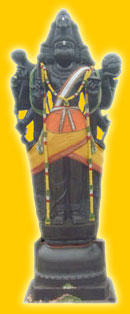
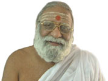

|  |
| www.panchavatee.org | ||
|
Temple | Devotees | Contributions | Events | Gallery |
| Jayamangala Panchamukha Sri Anjaneyaswamy | ||
| Dear
Devotees, This is an Appeal with all humility from the humble servants of Sri Ramachandra Prabhu to all our fellow devotees and devout members of the public. We are happy to announce that with the divine blessings of “SRI SEETHALAKSHMANA BHARATHA SATHRUGNA HANUMATH SAMETHA SRI RAMACHANDRAMOORTHY”, we have been ordained to construct a new Temple for ‘JAYAMANGALA VISWAROOPA PANCHAMUKHA SRI ANJANEYASWAMY’, for the well being of all mankind and living beings of the world. This new Temple is to be constructed on a 12 acre land area, located on the 29th kilometre on the Tindivanam - Pondicherry National Highway. At the time of the Ashtamangala Deva Prashnam conducted by Jyothisha Mahavidwan Sri K.A. Narayana Poduval of Payyanur and Pundit Sri Unnikrishna Panickkar of Parappanangadi, in Kerala, it was revealed that this particular holy site was known as Panchavatee, in times of yore and that many Siddha Purushas performed penance at this place. They proclaimed that even today, Sri Anjaneyaswamy is present at this site, in a Sookshma Roopam (unseen) as Panchamukha Hanuman. This area where the new Temple for Sri Panchamukha Anjaneyaswamy is coming up is known as Panchavatee Kshetram. The Panchamukha Sri Anjaneyaswamy’s Vigraham installed at the Panchavatee Kshetram on 11th June 2003 is in unique Viswaroopa posture (Thirukolam), 36 feet in height not seen anywhere else on this earth. Besides this sannidhi for Anjaneyaswamy, the Temple will also enshrine Sannidhis for Jayamangala Mahaganapathi and Sri Ramachandraprabhu in Pattabhisheka Thirukolam. We appeal to all devotees and sincerely request their active participation and generous contribution towards this holy and huge task aimed at the well being of all. Together may we be the recipients of the divine blessings of Sri Seetha Lakshmana Bharatha Shatrughna Hanumath Sametha Jayamangala Sri Pattabhiramachandraprabhu, Jayamangala Valampuri Sri Mahaganapathy and Jayamangala Panchamukha Sri Anjaneyaswamy. With Pranams, RAMANI ANNA (FOUNDER MANAGING TRUSTEE) |